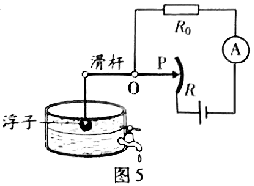
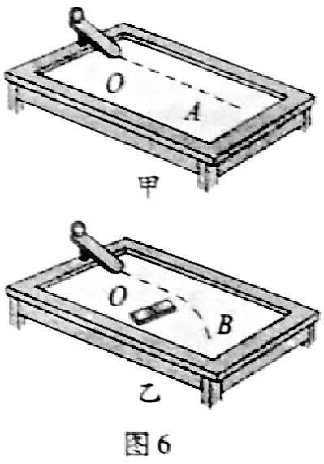
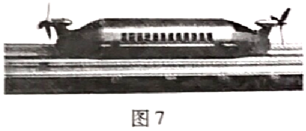
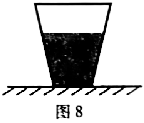

2018年北京市中考物理试题 · 选择题 第11、12、13、14、15题
11．有两个额定电压相同的电热水壶甲和乙，甲的额定功率为1800W，乙的额定功率为1200W。两个电热水壶都正常工作时，下列说法中正确的是
A．甲电热水壶两端的电压较高
B．电流通过甲电热水壶做功较快
C．通过两个电热水壶的电流相等
D．相同时间内，两个电热水壶消耗的电能一样多

12．小海设计了一种测定油箱内油量的模拟装置，如图5所示，其中电源两端电压保持不变，R0是定值电阻，R是滑动变阻器的电阻片，滑动变阻器的滑片P跟滑杆的一端连接，滑杆可以绕固定轴O转动，另一端固定着一个浮子。油箱中的油量减少时，浮子随油面下降，带动滑杆使变阻器的滑片P向上移动，从而引起电流表的示数发生变化。下列说法中正确的是A．电流表示数变小时，表明油箱中的油量减少

B．电流表示数变小时，电阻R0两端电压变大C．当油箱中的油量减少时，电流表示数变大
D．当油箱中的油量减少时，变阻器R连入电路的电阻变小
13. 在图6所示实验中，将小铁球从斜面顶端由静止释放，观察到它在水平桌面上运动的轨迹如图6甲中虚线OA所示。在OA方向的侧旁放一磁铁，再次将小铁球从斜面顶端由静止释放，观察到它在水平桌面上运动的轨迹如图6乙中虚线OB所示。由上述实验现象可以得出的结论是
A. 小铁球在桌面上继续运动是由于受到向前的作用力
B. 磁铁对小铁球没有作用力
C. 力可以改变小铁球的运动方向
D. 力可以使小铁球发生形变

14. 中国科技馆有一个由小车和螺旋桨组成的装置，如图7所示。小车在磁体间的相互作用下悬浮于水平平直轨道上。按下控制开关，小车左端的螺旋桨开始转动，小车由静止开始沿轨道向右运动，速度逐渐增大；一段时间后，小车右端的螺旋桨也开始转动，最终在两个螺旋桨转速的自动调节下，小车可以停在轨道上。下列说法中正确的是A. 小车静止悬浮在轨道上时，只受到重力作用
B. 小车静止悬浮在轨道上时，受到竖直向上的磁力
C. 小车向右运动的过程中，所受合力一定为零
D. 小车速度增大的过程中，小车的机械能不变

15. 如图8所示，盛有水的杯子静止在水平桌面上。杯子重1N，高9cm，底面积30cm2；杯内水重2N，水深6cm，水的密度为1.0×103kg/m3，g取10N/kg。下列选项中正确的是A. 水对杯底的压强为900Pa
B. 水对杯底的压力为2N
C. 水杯对桌面的压强为1000Pa
D. 水杯对桌面的压力为2.8N